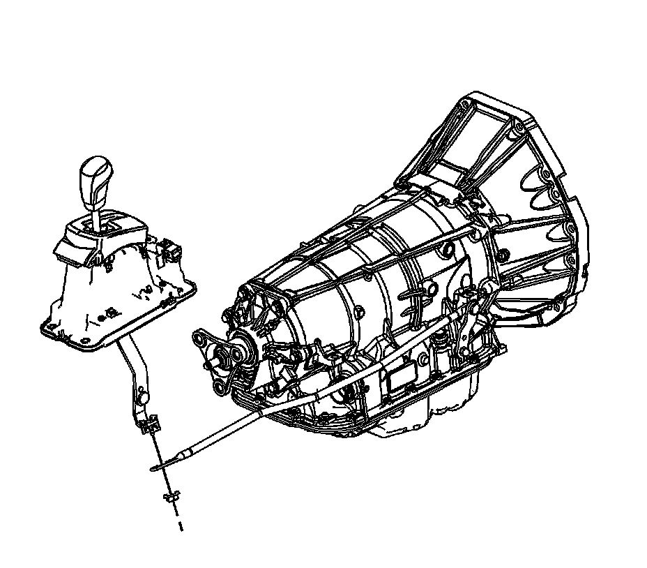
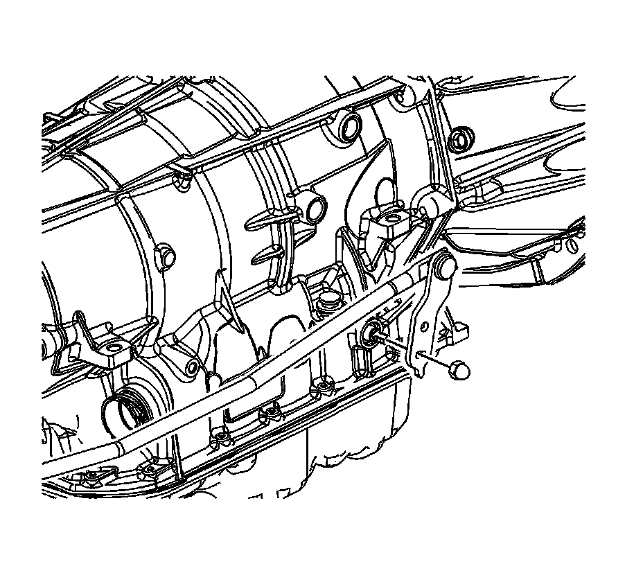

Shift Control Linkage Replacement (Rear Wheel Drive)
Shift Control Linkage Replacement (Rear Wheel Drive)
Removal Procedure
1. Position the shift lever in PARK.
2. Raise and support the vehicle. Refer to Lifting and Jacking the Vehicle (Service and Repair) .

3. Remove the nut from the shift control linkage rod.
4. Disconnect the shift control linkage rod from the shift control assembly.

5. Remove the manual shift shaft nut.
6. Remove the shift control linkage from the vehicle.
Installation Procedure
1. Install the shift control linkage to the vehicle.
Notice: Refer to Fastener Notice (Fastener Notice) .
2. Install the manual shift shaft nut.
Tighten the manual shift shaft nut to 9 N.m (80 lb in).
3. Connect the shift control linkage rod to the shift control assembly.
4. Install the nut to the shift control linkage rod.
5. Adjust the shift control linkage. Refer to Shift Control Linkage Adjustment (All Wheel Drive) (Shift Control Linkage Adjustment (All Wheel Drive))Shift Control Linkage Adjustment (Rear Wheel Drive) (Shift Control Linkage Adjustment (Rear Wheel Drive)) .
6. Lower the vehicle.